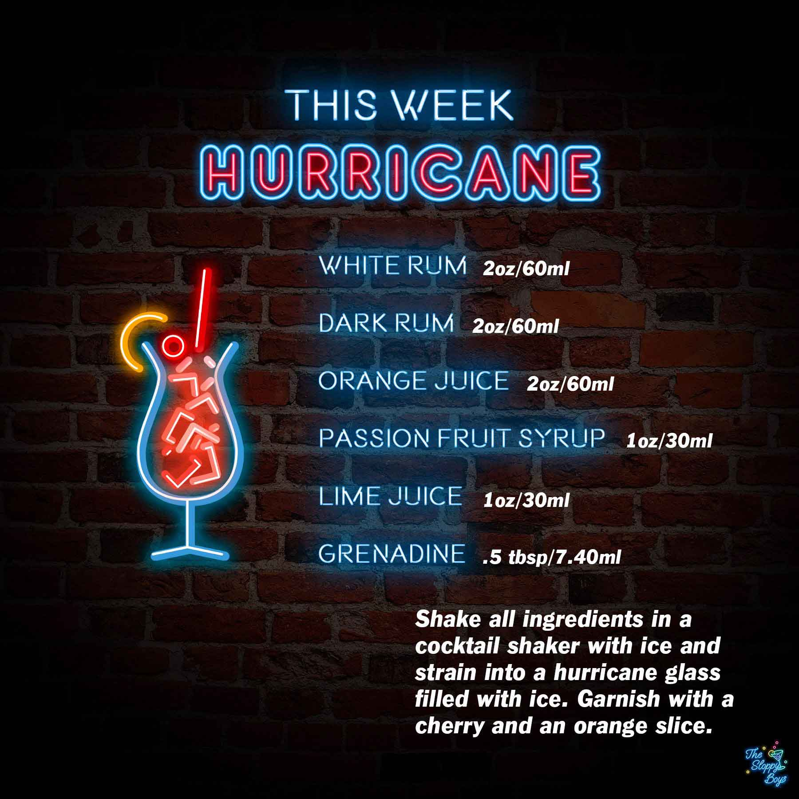

Hurricane
Ingredients
- White Rum (2oz/60ml)
- Dark Rum (2oz/60ml)
- Orange Juice (2oz/60ml)
- Passion Fruit Syrup (1oz/30ml)
- Lime Juice (1oz/30ml)
- Grenadine (.5 tbsp/7.40ml)
Steps
- Shake all ingredients in a cocktail shaker with ice and strain into a hurricane glass filled with ice.
- Garnish with a cherry and an orange slice.
Notes